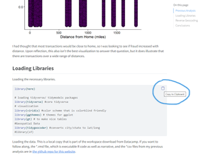
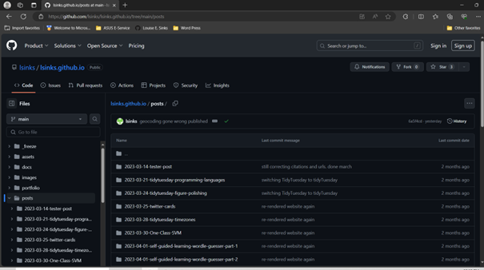
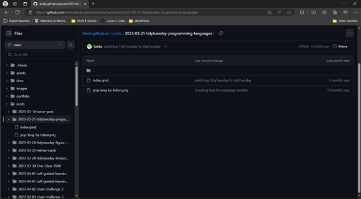
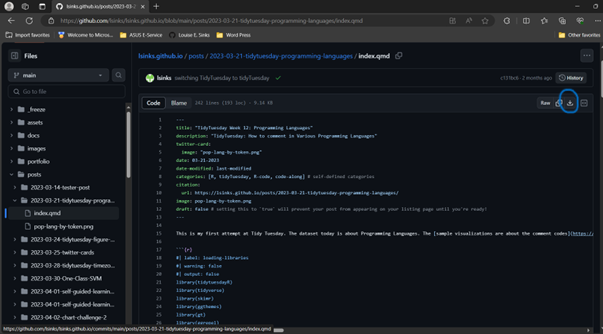
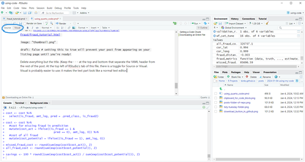
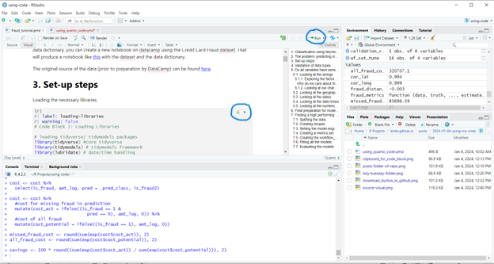
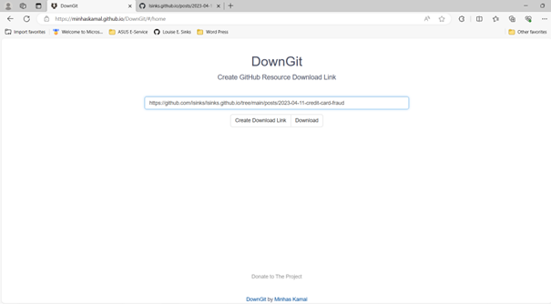

How to Execute the Code on My Blog by Downloading the Quarto File
I’ve said in several places that all my blog posts are fully executable code. I’ve provided a concise summary of how to access the code on my landing page, but I thought these instructions weren’t detailed enough for a novice user. This post will walk through all the ways you can access my code and get it running- from simplest to most complex.
These instructions are for those who use RStudio for their IDE. (If you already have reticulate/ Python set-up in RStudio, then you can also follow the same process for Python-based quarto files. Otherwise, check out the Quarto documentation for Python projects in your preferred environment.)
I expect you will transform and modify my code for your specific problem, but I recommend ensuring everything runs properly without modifications (other than file paths) first.
Etiquette and Ethics
You can use any of my code as you see fit for non-commercial purposes. If you use a lot of it, then I’d appreciate a link or citation in your work if you are publishing/ posting it/ making it available to others. I know “a lot” is vague; I tend to err on the side of giving links for almost everything, which is easily done on a blog. My guidelines for informal writing like my blog are:
- If I couldn’t have figured it out without the source, then I cite it.
- If I’m just copying a line or two of code as the equivalent of looking up syntax for something I know how to do, then I don’t.
If I were doing work for school or a job, I would follow the organization’s academic honesty/ citation policies. But generally, you aren’t going to run into trouble being more generous with citations/ link-backs/ credit.
My text cannot be republished/ reposted/ made available to others on any site other than mine. Writing generally takes vastly more time and effort than the code does. Small quotes (no more than a few sentences) with proper citations or links are fine, but you may not republish my writing. If, for some reason, you need more than a small quote, contact me via the comments to discuss.
You can use the methods discussed here to acquire code from other quarto blogs and websites published through Git Hub. Please check those sites for usage restrictions, but generally, adhering to the guidelines I’ve requested for my site is likely to be acceptable.
Set-up Considerations
A few issues might prevent my code from working for you- library versions and file paths.
Libraries
You and I may have different versions of a library that may lead to failure. I use renv on my side to track what versions are being used, but renv tracks project-wide. This means it contains information about every package I’d ever used on the blog. There are a lot of packages. I’ve also started including a code block at the top of my blog posts that forces the re-running of that page to use the package versions in the renv snapshot I took before I published the blog post. The code block looks like this:
renv::use(lockfile = "renv.lock")
You want to delete that, or else running that block will download many unneeded packages.
I don’t have a good solution for making sure you know which version of a library to use. I think this is a situation where this specific use case (building a blog using a project) has advanced beyond the traditional parameters of how a project should be used. I can try manually noting the version number when I load the library going forward, but I can’t promise I will always remember. If you run into problems, comment, and I’ll try to help.
File Paths
You may need to rewrite the file paths to match the structure in your folders. If I use the here package for file paths, you certainly will need to. here starts the path at the project level- for my blog that is several folders up from the post folder. If I’m not using here, then the path starts at the folder the qmd file is in, and probably will work fine for you. In most cases, I include the data within the blog folder or a subfolder, but there are a few cases where the data is elsewhere. The data could be in a prior blog post or on Git Hub’s large data storage system. I always include information about where the data can be found. Again, if you run into problems, comment, and I’ll try to help.
Accessing the Code
Getting a Code Chunk
Any executable code appears on the blog post inside a light gray box. If you mouse over the box, a clipboard appears in the right-hand corner.

Downloading an Entire File
Suppose you want all the code? You could cut and paste each code block, but it is probably easier just to download the entire file. My blog entries always use the date for the first part of the folder name, so you can go to the “posts” section of the GitHub repo for my blog and download the file. This method works best for projects where data comes from a single file or is imported from the internet.
You do not need a GitHub account to view my repo or download files, so don’t make an account just for this.
Here is the posts folder of my repo:

Click into a folder, and you’ll see some files. In the simplest case, it will be a *.qmd file and an image file. The image file is unlikely to be relevant to the code; it is probably the image used to make the thumbnail on the blog listing page. In later blog posts, it is almost always called thumbnail. This file can be ignored.
This screenshot is of the folder for my first TidyTuesday project. The thumbnail image is named “pop-lang-by-token.png”, but it is the thumbnail and can be ignored.

The GitHub web interface doesn’t have a way to download multiple files or subfolders, so you’ll need to click on each file, and then you’ll get a screen with the file and a download button.

You can now open RStudio, go to file, open file, and open this file. You probably want to delete most of the YAML header; this contains instructions on how to render the *.qmd file into HTML and information specific to me and my blog.
Here is a YAML header for my classification project.
title: "Credit Card Fraud: A Tidymodels Tutorial"
description: "An Imbalanced Class Problem"
twitter-card:
image: "thumbnail.png"
date: 04-11-2023
date-modified: last-modified
categories: [R, R-code, tidymodels, machine learning, classifiers] # self-defined categories
citation:
URL: https://lsinks.github.io/posts/2023-04-11-credit-card-fraud/fraud_tutorial.html
image: "thumbnail.png"
draft: false # setting this to true will prevent your post from appearing on your listing page until you're ready!
Delete everything but the title. (Keep the - - - at the top and bottom that separate the YAML header from the rest of the post. At the top left of RStudio’s tab of this file is a toggle for Source or Visual. Visual is probably easier to use; it makes the text part look like a normal text editor.

Each code block has a run button and a “run up to this block” button. A set of global run options is also at the top of the pane. The render button will also execute the code but will not populate the environment with any variables. This isn’t what you want!

You probably want to step through the file, delete text you don’t need, and/or follow the links I provided to explain individual code blocks. (But see the end of this post if you don’t want any text!)
Downloading an Entire Folder
Some projects contain multiple data files or subfolders with data. While you could download them one by one, it is easy to use the DownGit tool by minhaskamal.github.io. Again, you do not need a GitHub account to use this.

This will download a zip file of the folder and its contents, including subfolders. Extract all. You can rename the top-level folder if you wish. It will be named what my blog folder was named; in this case, “2023-04-11-credit-card-fraud”.
Open RStudio, select the file, new project, and then create the project from the existing directory and select the folder you just extracted by double-clicking it in the file selector. You should then be able to work with the code and data normally inside RStudio. RStudio might prompt you to install some packages.
Again, I recommend running the code chunk by chunk so you can make sure everything works. In this particular example, I also recommend reducing the complexity of the fitting. Maybe reduce the folds to 2 and the grid search to 2 and comment out a few of the methods in the workflowset. Details of how long each method took me to run on my laptop are found in my original classification blog post. It wasn’t quick, especially the random forest workflows.
Conclusion
I think Quarto is a fantastic format to write code. Even stuff I wrote as regular R code/ projects, I migrated over to Quarto. The hybrid text/code format allows much more detailed descriptions than you’d ever want to put in code comments. As a learner, I think it is an awesome tool to accelerate your skills. Downloading a template project like my classification model can speed up your projects. Using Quarto even for your private projects is very useful. It becomes both a coding and notetaking system. Throw in links and explanations for your code block when you learn something new or encounter something you don’t quite understand. Future you will thank you when 6 months later when you think “I really want to do blah, and I think I ran across a great reference when I was working on project y” and then you can pull it up.
I Just Want an *.R File!
You read my conclusion and aren’t persuaded that Quarto is a valuable format. Luckily, you can easily extract the code only and have a nice, clean, narrative-free R file to work with.
Once you have the *.qmd file, use the following code knitr::purl("file_path\file.qmd") in the RStudio console to produce an R file with code only. This conversion also works with rmarkdown files. (Technically, it worked with markdown first, since Quarto uses knitr to render R code.)
Citation
@online{sinks2024,
author = {Sinks, Louise E.},
title = {How to {Execute} the {Code} on {My} {Blog} by {Downloading}
the {Quarto} {File}},
date = {2024-01-05},
url = {https://lsinks.github.io/posts/2024-01-05-using-my-code/using_quarto_code.html},
langid = {en}
}